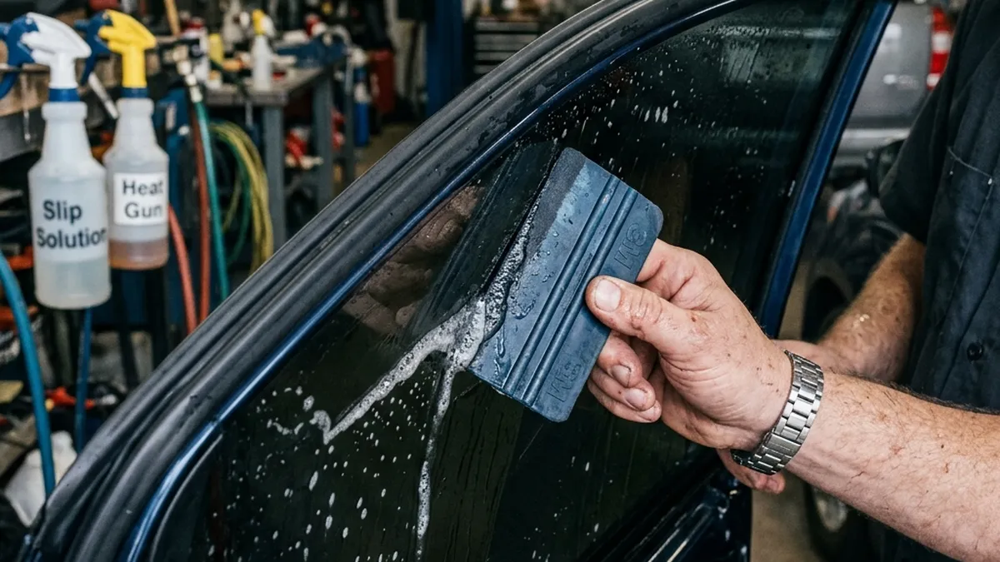

You've booked your appointment. You're ready to get that sleek, dark look and massive heat rejection. But what actually happens during a professional car tint installation? If you've never watched the process, you might be surprised by how much skill and precision it requires.
Tinting isn't just about slapping a sticker on the glass. When you bring your vehicle to us to tint auto glass, it undergoes a meticulous, multi-step process designed to ensure a flawless, lifetime finish.
Preparation is Everything
The first step is intense cleaning. Even a microscopic speck of dust will show up like a boulder under the film. Our technicians painstakingly clean the inside of every window using specialized solutions and razor-edge scrapers to remove any sap, adhesive, or invisible debris.
Once the glass is pristine, we don't just guess the shape. We use advanced computer software and plotters to cut the exact pattern for your specific tint automotive make and model. This means a blade never touches your vehicle's glass, completely eliminating the risk of accidental scratches.

The Shrinking and Application Process
Here is where the real artistry of car tint installation comes into play. Because car windows—especially the rear windshield—are curved, flat film won't just stick. It has to be heat-shrunk. Using high-powered heat guns, our installers shrink and mold the film to the exact curvature of the outside of the glass before ever bringing it inside the car.
Finally, the film is brought inside, applied with a slip solution, and aggressively squeegeed to push out all the water and lock the adhesive to the glass. It's a demanding process, but it's the only way to perfectly tint auto glass. When you drive away from Riverside Tints, you're driving away with a masterpiece.